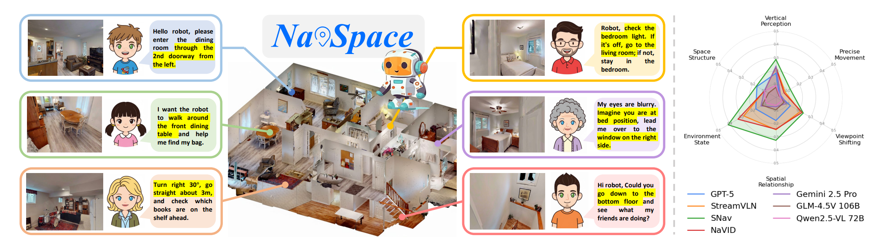
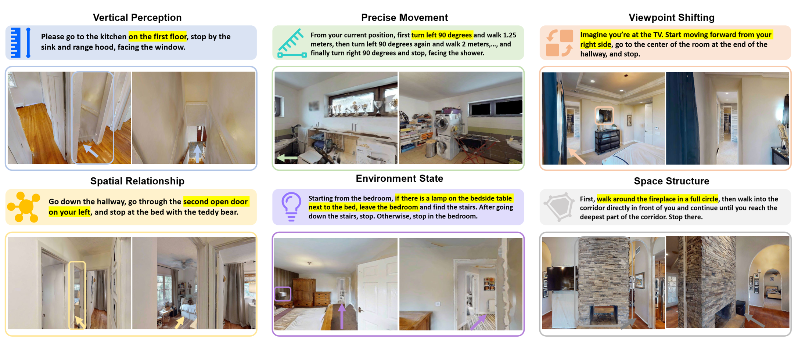
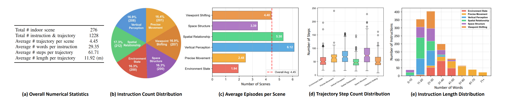
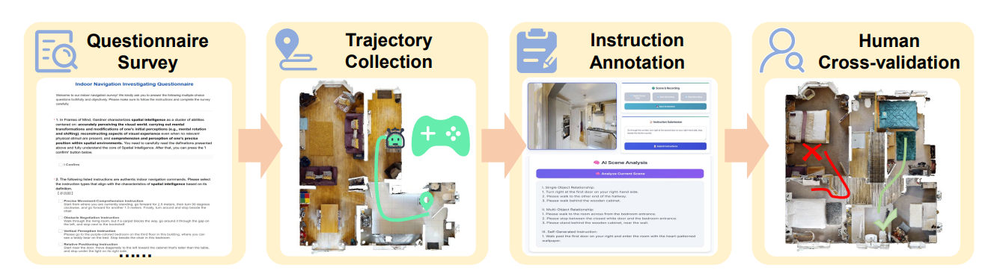
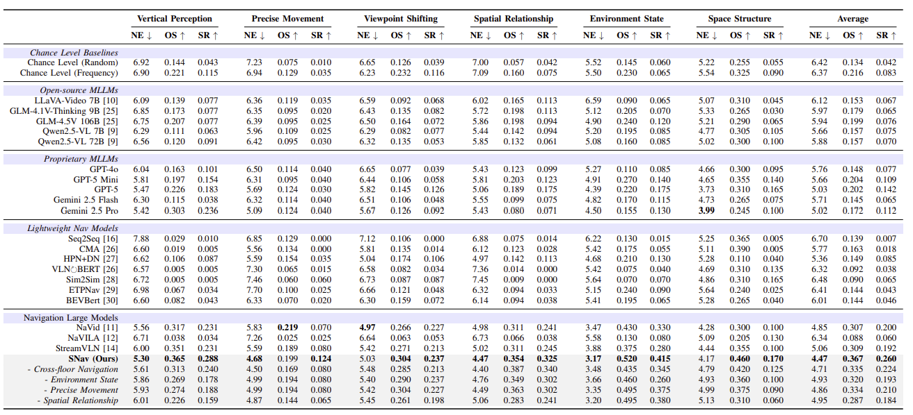
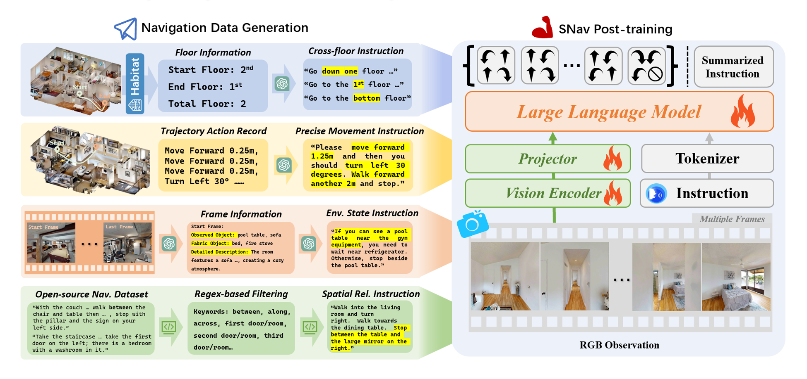
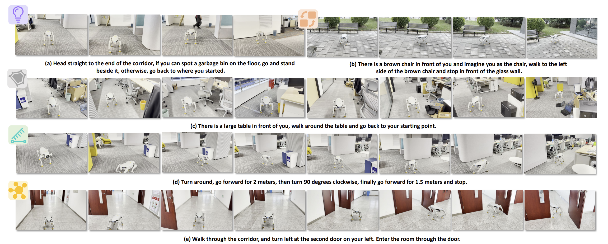
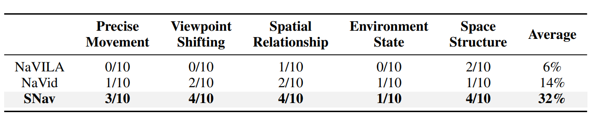

How Navigation Agents Follow Spatial Intelligence Instructions
NavSpace: We introduce the first spatial intelligence benchmark for instruction-based navigation: NavSpace.
Evaluation: we comprehensively evaluate 22 navigation agents in total, containing models from open-source MLLM, proprietary MLLM, lightweight navigation models to navigation large models.
Discussions: Based on the evaluation results, we conducted a detailed analysis of the limitations of existing methods and distilled four key insights.
Baseline Model: SNav: We propose SNav, a spatially intelligent navigation model, that surpasses existing models and establishes a strong baseline for NavSpace and real robot tests.
NavSpace: How Navigation Agents Follow Spatial Intelligence Instructions

Figure 1: (Left) NavSpace tasks. (Right) Evaluation results compare various models with baseline SNav.
NavSpace Introduction
Benchmark Overview:
We introduce the NavSpace benchmark, which
contains six task categories and 1,228 trajectory-instruction
pairs designed to probe the spatial intelligence of navigation
agents. On this benchmark, we comprehensively evaluate 22
navigation agents, including state-of-the-art navigation models
and multimodal large language models. The evaluation results
lift the veil on spatial intelligence in embodied navigation.
Furthermore, we propose SNav, a new spatially intelligent
navigation model. SNav outperforms existing navigation agents
on NavSpace and real robot tests, establishing a strong baseline
for future work.

Figure 2: Instruction Categories in NavSpace.
These six categories were determined based on the questionnaire survey results. Every navigation trajectory and instruction was collected manually from HM3D scene datasets through our designed platform.

Figure 3: Visualization of NavSpace Statistics.
NavSpace Construction:
We designed a two-part survey to identify navigation instructions indicative of spatial intelligence. Participants first reviewed a definition of spatial intelligence and confirmed comprehension, then evaluated 17 candidate instruction types, selecting up to six. From 512 responses, 457 valid ones were retained, yielding six key categories: Vertical Perception, Precise Movement, Viewpoint Shifting, Spatial Relationship, Environment State, and Space Structure. To collect trajectories, we built a Habitat 3.0-based platform with HM3D scenes, integrating a front-end annotation webpage and simulator-linked backend. Annotators teleoperated agents in first-person view, recording RGB frames, actions, and coordinates. GPT-5 then analyzed trajectories, combining navigation data with sampled visual observations to generate candidate instructions, which annotators refined and finalized. For quality assurance, cross-validation required each instruction to be executed by a different annotator; unsuccessful cases were discarded and re-annotated. This pipeline ensured collected data were diverse in spatial reasoning and reliable for downstream evaluation.

Figure 4: Construction pipeline of NavSpace. (1) Questionnaire Survey: identify navigation instruction types that best reflect spatial intelligence. (2) Trajectory Collection: teleoperate agents in simulation to record trajectories. (3) Instruction Annotation: generate instructions with large-model-assisted analysis. (4) Human Cross-Validation: review and validate instructions for correctness and executability.
Evaluation on NavSpace
Evaluation Environment and Metrics:
NavSpace takes Habitat 3.0 as the simulator to conduct the evaluation. Evaluation scenes are selected from the HM3D datasets. At each step, the agent
can only select one action: move forward 0.25m, turn left 30°, turn right 30°, or stop. Following previous instruction
navigation benchmarks, we employ the following widely used evaluation metrics: Navigation Error (NE), Oracle Success Rate (OS), Success Rate (SR).
We conduct a comprehensive evaluation of existing multimodal large models and navigation models. These models can be categorized into the following five types:
Chance Level Baselines
Open-source MLLMs
Proprietary MLLMs
Lightweight Navigation Models
Navigation Large Models
Performances on NavSpace:
NavSpace poses a major challenge for current models. Open-source MLLMs achieve less than 10% success, near chance level, while proprietary MLLMs perform slightly better, with GPT-5 leading but still under 20%. This indicates that existing MLLMs are far from reliable navigation agents for spatial intelligence tasks. Lightweight navigation models such as BEVBert and ETPNav also fail on NavSpace, whereas larger navigation models like NaVid and StreamVLN outperform GPT-5 and show preliminary spatial reasoning ability. Our proposed model, SNav, surpasses both state-of-the-art navigation models and advanced MLLMs, establishing a strong new baseline. Ablation results further demonstrate that its instruction-generation pipeline is key to enhancing spatial intelligence performance.

Table 1: Quantative performances on NavSpace. Bold color indicates the best result among all models
Our SoTA Model——SNav:
The architecture of the SNav incorporates three fundamental
components: the Vision Encoder v(·), the Projector p(·),
and the Large Language Model (LLM) f(·). We follow the previous work to conduct navigation
finetuning through co-training with three tasks. These
tasks include Navigation Action Prediction, Trajectory-based
Instruction Generation, and General Multimodal Data Recall.
After this, we obtain the vanilla SNav model.
Spatial Intelligence Enhancement:
Cross-floor Navigation: We identify R2R trajectories likely to cross floors by thresholding height differences between start and end. For each candidate, the agent follows a shortest-path planner in Habitat while recording RGB frames. A trajectory is labeled floor-crossing if GPT-5 detects stairs in ≥3 frames. Using methods from HOV-SG, we assign floor labels to start/end points and combine them with Habitat's floor count for vertical-space annotations. GPT-5 then restyles raw instructions (e.g., “Walk up the stairs ...”) into floor-specific ones (e.g., “Walk up to the third floor ...”).
Precise Movement: We sample start-goal pairs in MP3D scenes and compute shortest paths in Habitat. After filtering, trajectories of target length (20-60 steps) are retained, with discrete actions recorded (turn ±30°, move forward 0.25m, stop). Consecutive actions of the same type are merged into concise descriptions (e.g., “move forward 3 m, turn right 60°, move forward 2 m”). GPT-5 paraphrases these into natural-language instructions.
Environment State Inference: We extract start-end point pairs with navigation instructions from the R2R dataset and generate trajectories using a shortest-path planner, saving RGB frames along each path. GPT-5 is then queried with the first and last frames to infer three elements: observable objects, unobservable objects, and scene descriptions. Since this category often follows an if…otherwise… structure, we design five template categories that integrate multimodal observations with original instructions. Two representative patterns are: (1) Original_instruction; if [visible_object in last frame] then stop at [last-frame location], otherwise go to [scene description from first frame], and (2) If [fabricated_object in first frame] then stop, otherwise follow Original_instruction and stop at [last-frame location]. GPT-5 rewrites instructions according to these templates, producing high-quality training data for environment state inference.
Spatial Relationship: We filter R2R instructions with regular expressions for ordinal phrases (“first room/door”, “second room/door”, etc.) and detect multi-object relations using keywords like “between”, “along”, and “across”.

Figure 4: Spatial Intelligence Enhancement.
Real World Tests:
In the real-world test, we test our model SNav across three different environments:
office, campus, and outdoor environments. The test covers
five categories of spatially intelligent navigation instructions
(excluding vertical perception). Our experimental platform is
the AgiBot Lingxi D1 quadruped, which is equipped with
a monocular RGB camera and motion-control APIs.

Figure 5: Qualitative results from the real-world deployment of SNav. The evaluated instructions cover five categories
proposed in NavSpace. The test environment includes the office, the campus building, and the outdoor area.

TABLE 3: Quantitative Results of Real-World Experiments.
NavSpace Leaderboard
To include your model in the leaderboard, please email NavSpace@163.com with evaluation logs and setups.